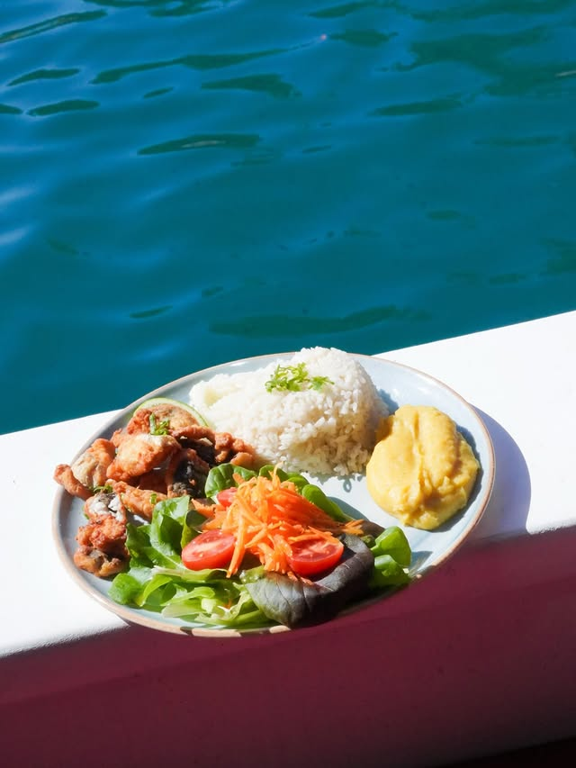
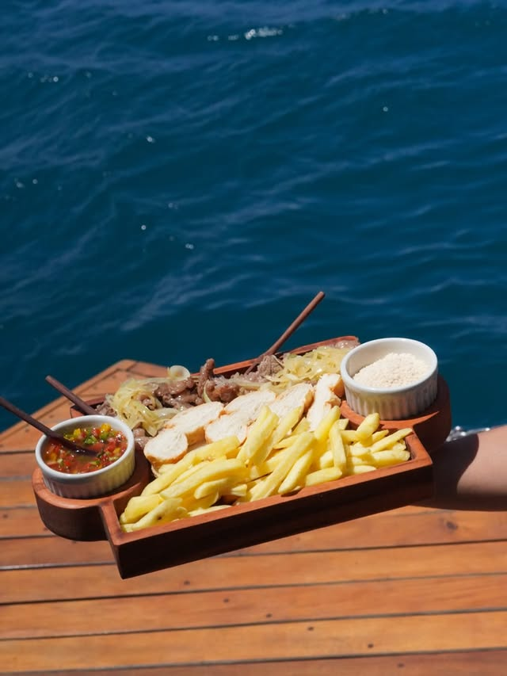
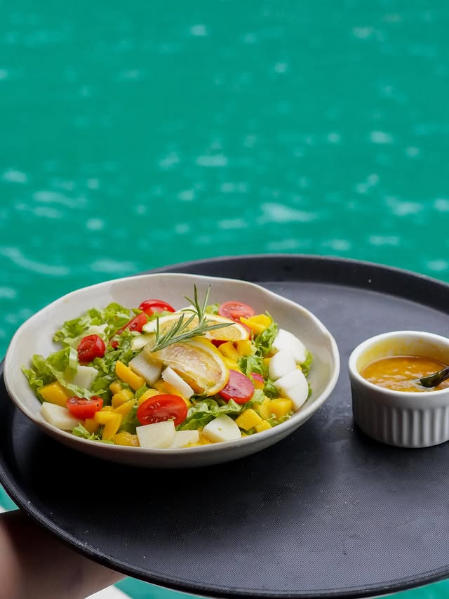
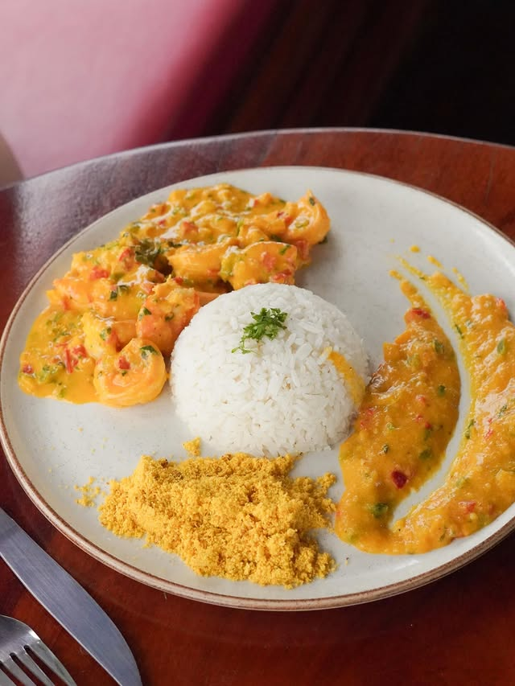
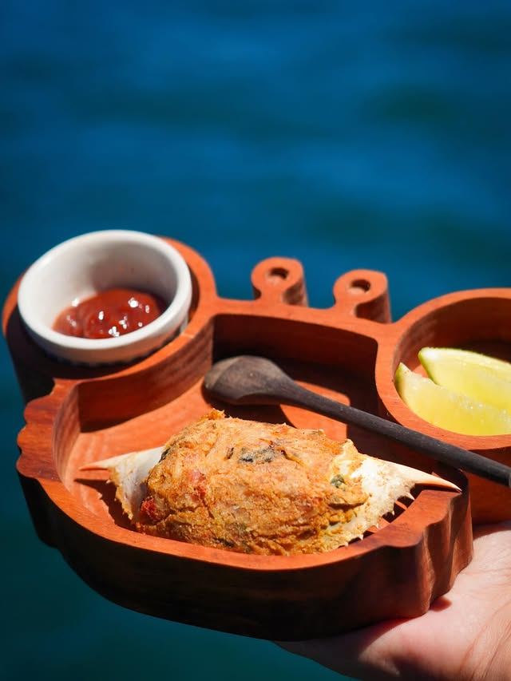
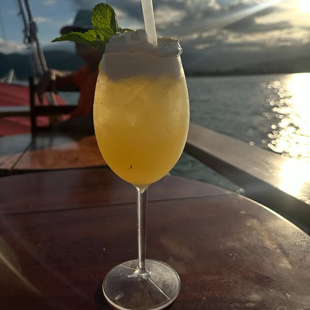
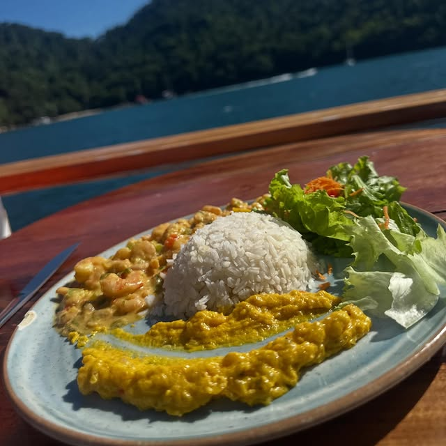
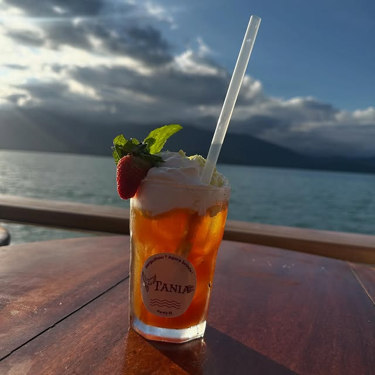

Banana da terra, taioba, gengibre, peixe fresco do mercado da manhã. Cada prato é uma viagem pela cozinha caiçara — preparado com técnica de chef e a alma da Costa Verde.
O cardápio segue três regras antigas: o que está fresco hoje entra no prato; o que cresce aqui ganha o palco; o que a Tânia faria, fazemos.
Trabalhamos com fornecedores locais — pescadores artesanais, cooperativas de produtores caiçaras, queijarias familiares. Cada ingrediente tem nome e procedência.


Cliques reais do bar e da cozinha da Tânia — bartender em ação, drinks autorais, pratos servidos a bordo. Passe o cursor em cada imagem.






A coquetelaria é preparada na hora pela equipe da casa — assista, no vídeo, ao bartender em ação durante o passeio. O cardápio do bar é apresentado a bordo.
Bar e restaurante completos com gastronomia local. Coquetelaria autoral, sucos, refrescos da casa, cervejas e vinhos — tudo apresentado a bordo conforme o dia.
Não é permitida a entrada de coolers, alimentos ou bebidas externas a bordo. O bar oferece variedade suficiente para acompanhar todas as paradas do roteiro.
Comunique restrições alimentares ou alergias no momento da reserva — com pelo menos 48 horas de antecedência do embarque. Adaptamos o cardápio sem custo adicional para:
A cozinha de bordo é compartilhada — em caso de alergia severa com risco anafilático, sinalize ao reservar para que possamos avaliar se conseguimos garantir 100% da segurança.
Para fretamentos privados e eventos, criamos um menu sob medida com o chef. Conte para a gente o tema, as preferências e as restrições — montamos do couvert ao café.